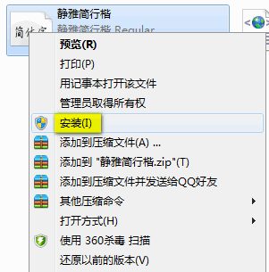

WIN7系统字体安装：
方法一：WIN7系统安装字体最方便了，直接把TTF文件放在电脑的任意位置，然后双击打开（如下图），点击安装字体即可。

方法二：右键单击TTF字体文件，选择“安装”即可。（如下图）
WINXP系统字体安装：
直接复制TTF字体文件粘贴到C:\Windows\Fonts就可以了。（如下图）
在OFFICE WORD中使用自己的字体：
打开word，选中文字，选择刚才安装的字体即可。
在手机界面上使用自己的字体：
手机上安装字体过程略复杂，需要先把手机ROOT了，即获取管理员权限。每个牌子的手机ROOT方法不一样，可用“ROOT大师”、“ROOT精灵”之类的辅助工具ROOT，具体方法请自行百度一下，这里不再赘述。注意：ROOT手机需要自己有较强的动手能力，ROOT前需先把电话本、照片等重要的资料备份好。如果ROOT手机变砖了也不要惊慌，因为只是系统软件坏了，硬件是搞不坏的！搞不坏的！搞不坏的！在你手机品牌的论坛里一般都有救砖教程，再研究他们吧，实在不行那就去淘宝找人远程救砖！总之，你的手机不会成砖头！
ROOT完了后，手机上安装“字体管家”、“爱字体”等字体管理APP，然后把TTF字体文件放到以上APP要求的文件夹里面，按APP指导即可更换手机的字体。